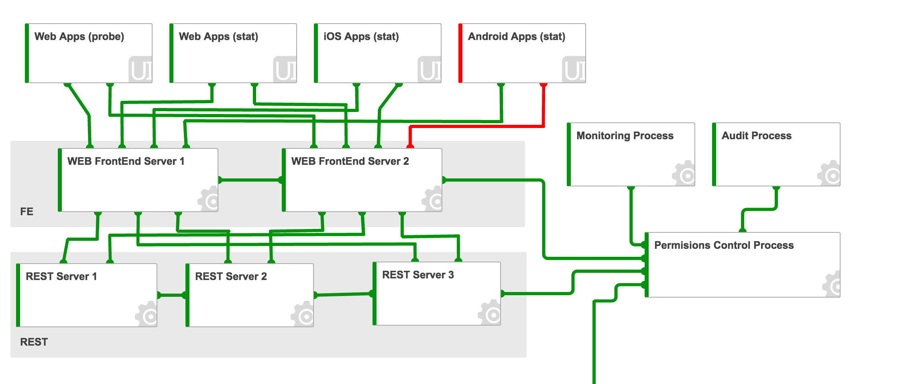
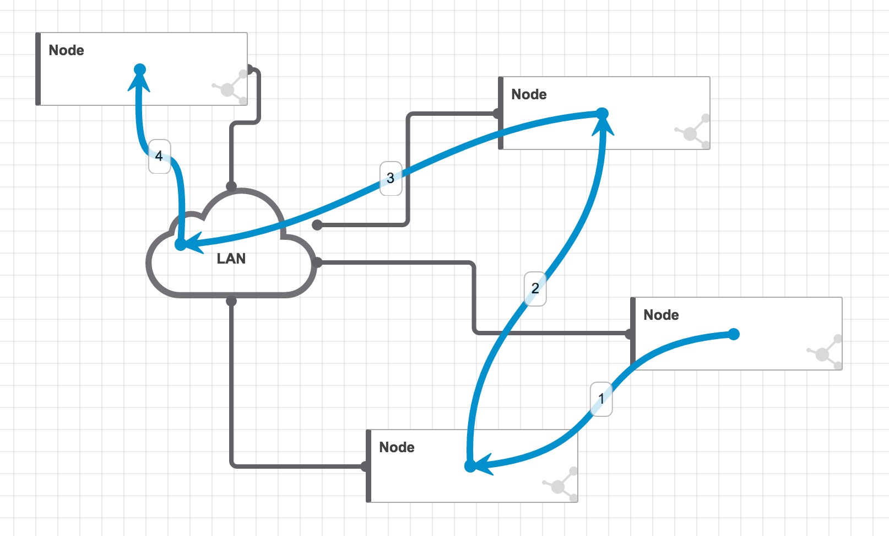
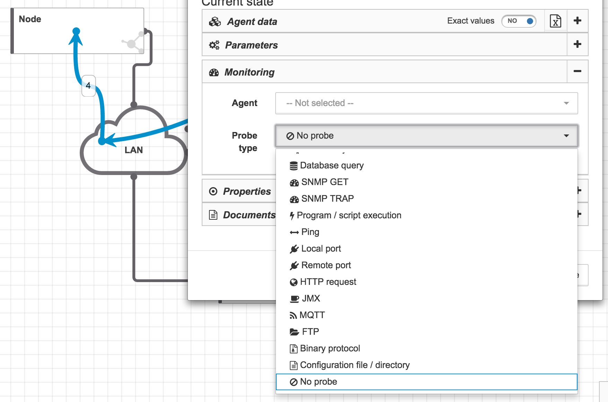
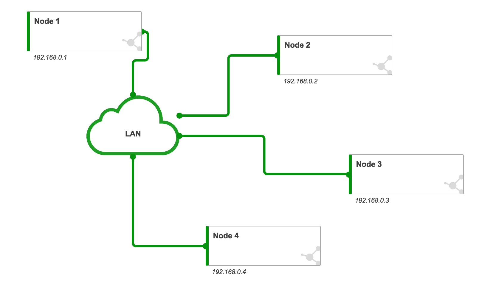
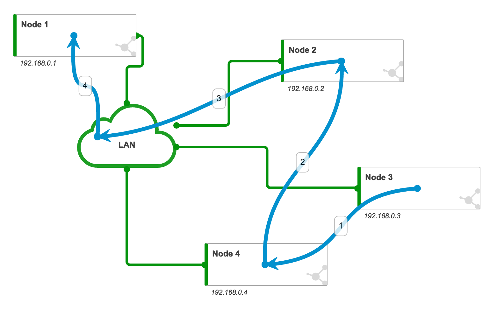
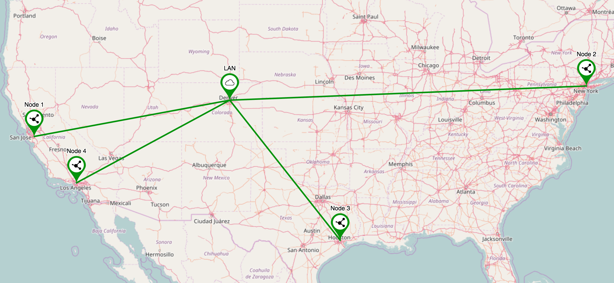
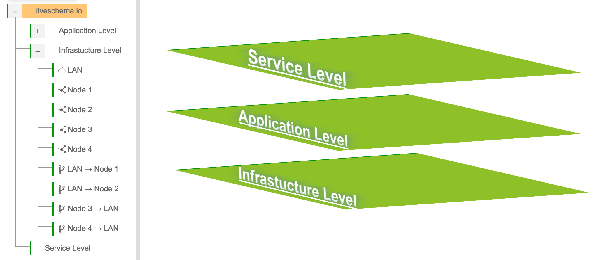
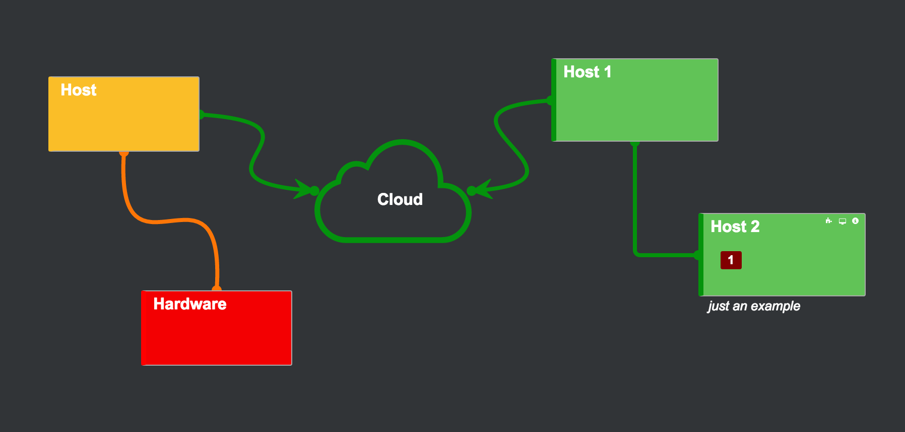

Some of LiveSchema screenshots examples are here on the page.
You can easily draw a schema of your service, application or network layer. 
Since you defined a schema you can also draw an information flow on top. 
A list of methods give you opportunity to have green/orange/red state check for link or object. 
Have all the state check defined you get a clear picture of your scheme. 
You can show/hide the flow at any time you work with schema. 
You can also have a geographical map view of objects and links. 
You can describe as much levels of your production environment as you need. 
In some cases you may want to see you scheme in a different color. 
28 Feb 2017
Contact us on welcome@liveschema.io